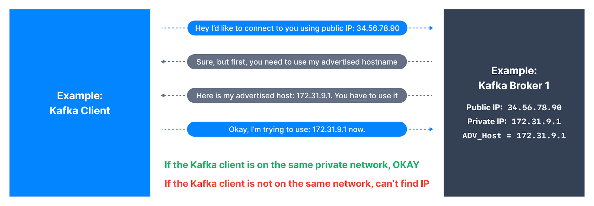
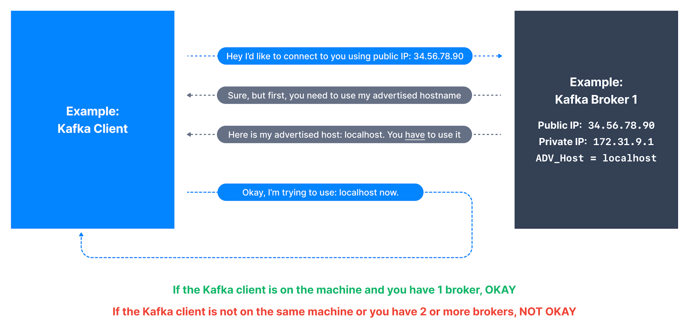
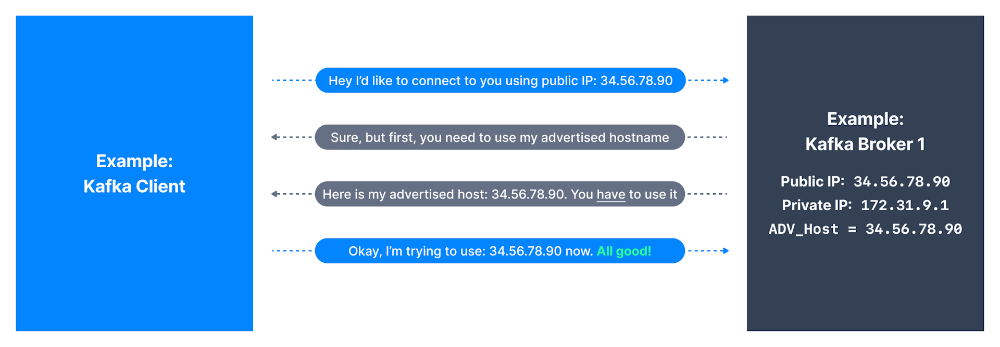

1. Connecting To Cluster
-
Advertised Listener是Kafka最重要的设置，正确设置它可
确保整个网络中的客户端能够成功连接到Kafka集群中的每个broker； -
当客户端连接到Kafka集群时，无论客户端最初是如何连接到broker，broker都将使用
客户端必须用于所有未来通信的advertised host来reply initial request； -
若advertised host配置错误，客户端将无法成功继续与Kafka broker交换数据；
-
Bottom Line，并非因Kafka主机名和端口是可访问的，
故客户端一定能成功与其建立kafka-protocol connection； -
若Advertised Host IP与Kafka客户端在同一网络，
则将正常连接connect fine，否则将连接失败connect fail；

2. Advertised Host Localhost
* 若将Advertised Host设置为Localhost，则若Kafka
客户端与broker在同一计算机上运行，则它将成功连接到集群；

3. Advertised Host PublicIP
-
若将Advertised Host设置为Public IP，
那只要Public IP不变，Kafka客户端就会连接到集群；

4. Setting Advertised Host
-
在检查examine设置Advertised Host所涉及的细微差别后，
设置broker的Advertised Host的更安全的方法： -
若客户端是broker网络的本地客户端，请设置以下任意一项：
-
A：internal private IP；
-
B：internal private DNS hostname，客户端应能解析内部IP或主机名；
-
-
若客户端在公共网络，则设置以下任意一项：
-
A：external public IP；
-
B：external public DNS hostname pointing to public IP，
指向公共IP的外部公共DNS主机名，客户端必须能解析公共DNS
-